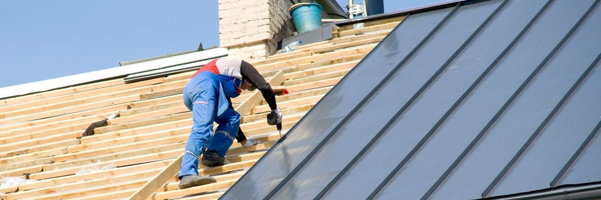

Expertise en Toiture & Couverture à Châlons-en-Champagne
Protection et Performance Thermique à Châlons
Notre entreprise de couverture intervient dans tout Châlons-en-Champagne pour assurer la pérennité de votre habitat. De la réfection complète de toiture en tuiles ou ardoises à l'amélioration de votre isolation, nous mettons notre expertise au service de votre confort. Nous utilisons des matériaux de premier choix, adaptés aux rigueurs du climat champenois.
Une bonne toiture commence par une structure saine. C'est pourquoi nous proposons également des services d'isolation de combles (laine minérale ou biosourcée) pour réduire vos déperditions de chaleur et optimiser votre performance énergétique. Chaque projet est étudié sur mesure pour répondre aux spécificités de votre bâti.


Entretien, Zinguerie et Étanchéité
Prolongez la durée de vie de votre couverture grâce à un entretien régulier. À Châlons-en-Champagne, nous réalisons des opérations de démoussage et de nettoyage professionnel suivies d'un traitement hydrofuge. Ces interventions préviennent les infiltrations et redonnent à votre toit son aspect d'origine.
Nous maîtrisons également tous les travaux de zinguerie pour une étanchéité parfaite des points singuliers (noues, faîtages, souches de cheminée). Notre engagement à Châlons est de vous fournir un chantier propre, réalisé dans les règles de l'art par des artisans passionnés par leur métier.
Nos Engagements Qualité à Châlons
-
Travaux Certifiés
Respect strict des normes DTU pour une sécurité et une durabilité maximales.
-
Garantie Décennale
Une assurance robuste qui protège vos travaux pendant 10 ans.
-
Économies d'Énergie
Des solutions d'isolation performantes pour réduire vos factures de chauffage.
-
Respect des Délais
Un planning de chantier clair et respecté pour votre tranquillité.